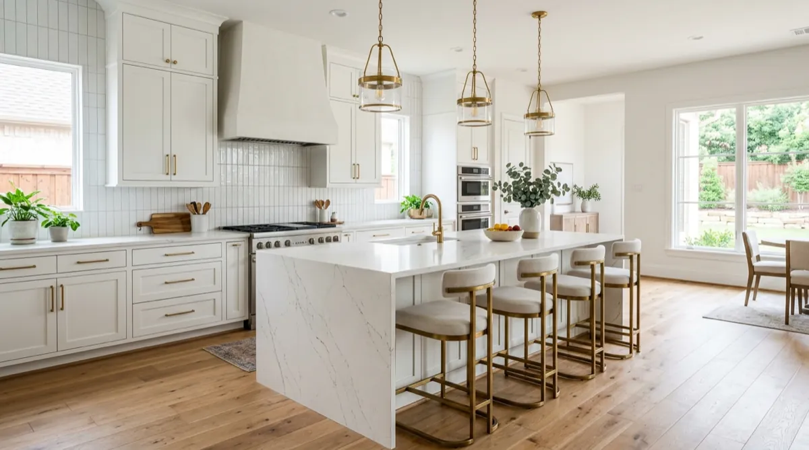

Frisco Kitchen Gut Renovation: Wall Removal, Custom Island, and Why It Took 6 Weeks
Based on a recent Frisco project · By Dillon Hubbard, OnPoint Pros · April 7, 2026

The Home
A two-story home in a popular Frisco neighborhood, built in 2007. The clients were a family of five who'd lived in the home for nine years. The bones were good — solid framing, decent layout, well-maintained — but the kitchen was a closed-off room that opened only through a 3-foot doorway into the family room. The wife described it as "the room I cook in alone while the kids are in the other room."
The original cabinetry was builder-grade oak with a glaze finish. The countertops were a beige-flecked granite. The floors were 12x12 tile. None of it was bad — it was all just dated and disconnected from the rest of the house, which the clients had updated piece by piece over the years.
What They Wanted
Three things, in priority order:
- Remove the wall between the kitchen and the family room so the kitchen becomes part of the living space.
- Build an oversized island with seating for 4 and a waterfall edge.
- Replace everything else — cabinets, counters, backsplash, floors, lighting, range hood — to match the rest of the house.
They had a Pinterest board they'd been adding to for 18 months. Most of it was white shaker cabinets, brass pendants, and large white oak floors. Easy to read, hard to argue with — that's still the dominant Frisco kitchen style for a reason.
The Wall Was Load-Bearing
First call with our structural engineer confirmed what we suspected: the wall between the kitchen and family room was load-bearing. That meant a structural beam to span the new opening, which we sized at roughly 16 feet wide — almost the full width of the room.
The beam decision matters because it shapes the schedule. A flush beam (hidden in the ceiling) is invisible but requires more framing work. A dropped beam is faster but visible. The clients chose flush. We added 3 days to the schedule.
Cabinet Strategy
For a kitchen this size in Frisco, semi-custom cabinets were the right call. The clients didn't have a weird footprint, they wanted a recognizable shaker profile, and the lead time was manageable at 5 weeks from order to delivery. Fully custom cabinets would have added 4–6 more weeks and significant cost without buying them anything they actually needed.
Plywood-box construction. Full-extension drawer hardware. Soft-close everything. White paint with brass cup pulls and brass knobs. Standard but executed well.
The Island
The island was the design centerpiece. We sized it at 9 feet long by 4.5 feet wide — large enough for prep on one side and seating for 4 on the other. White quartz with a waterfall edge on both ends. A prep sink. Two pendants centered above. Cabinetry in the same shaker profile but with deeper drawers for pots.
Quartz over marble for one reason: this is a kitchen used by a family with three kids. Marble would have stained from a single spaghetti sauce splash. Quartz handles real life.
The Six-Week Timeline
- Week 1: Demo and structural framing. Wall came down. Beam went in. New rough openings for sink, island electrical, pendant boxes.
- Week 2: Plumbing rough-in, electrical rough-in, HVAC tweaks for the new range hood vent.
- Week 3: Inspections. Drywall hung, taped, mudded, sanded, textured.
- Week 4: Floors went down (white oak engineered, wide plank, glue-down). Cabinets delivered and installed.
- Week 5: Quartz template, fabrication, install. Backsplash tile install. Range hood and appliances.
- Week 6: Paint, trim, lighting fixtures, plumbing fixtures, walkthrough, punch list.
The One Hiccup
The original quartz slab the clients picked turned out to have a flaw the fabricator caught at template. We had to pull a second slab from the supplier and rerun the fabrication. Cost us 4 working days. We made up 2 of them on the back end by accelerating the trim and paint phase, finishing 2 days behind the original target — well within the buffer we'd built into the timeline.
Outcome
The kitchen now opens fully into the family room. The island is the center of the house. The wife sent us a photo two months later of the whole family gathered around the island during a birthday party. That's the case-study win that doesn't show up in a quote — it's why we do the work.
The clients have referred us to two neighbors so far. Both became projects.
What We'd Do the Same
- Semi-custom cabinets, not fully custom — right call for the project size.
- Quartz over marble. No regrets.
- Flush beam over dropped. The ceiling is now invisible. Worth the 3 extra days.
- Engaged the structural engineer in week 1, not week 2.
What We'd Do Differently
- Order a backup quartz slab in advance. The 4-day delay was avoidable with a small upfront cost.
Want Something Like This for Your DFW Home?
Free on-site estimate. Written line-item quote. Same crew from start to finish.
Call (469) 238-1719